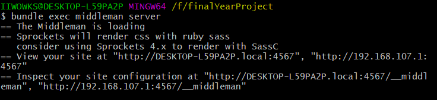

毕设说明文档
这里主要针对我的毕设项目———馆藏文物生存环境可视化系统 做主要的说明和介绍。
本地上运行项目
依赖环境
- Git
- Ruby >= 2.3
- 在windows10 下安装Ruby+Devkit 2.6.6-1 x64（百度上有安装步骤这里不详细介绍）
- Bundler
- NodeJS
步骤
- 环境配置完后，在项目
finalYearProject根目录下。使用git命令行： - 安装ruby gems
bundle install
- 以本地的形式运行
bundle exec middleman server

启动之后在浏览器中输入
http://localhost:4567可以查看项目可以生成静态html文件,生成的文件在
bulid文件夹下
bundle exec middleman build
或者
./deploy.sh
工程目录介绍
使用middleman创建的项目都有一个固定的目录格式：

source目录
source目录下包含构建网站的主要源文件
font
font目录下包含页面文档的使用字体，还有svg矢量图像。
image
存放一些图片资源
javascript
存放页面js脚本，主要包含：
- 页面标题层次索引
- 页面关键字搜索
- json格式文件读取
- ajax异步加载脚本
- echarts图表配置脚本
- jquery脚本
layouts
存放项目页面布局erb文件：
_header.erb：应用于所有页面页眉fyp_404.erb: 应用于项目中未完成页面layout.erb: 应用于项目中说明文档的布局配置- 其它的erb文件应用于不同页面的布局
stylesheets
存放项目样式表scss文件:
_normalize.scss用于初始化页面样式- 可供配置项：
_variables.scss用于配置一些全局变量：例如颜色、字体、字号、右侧标题菜单配置screen.css.scss是配置h5页面的重叠样式表，主要配置一些页眉、文档样式。
includes
存放项目说明文档markdown文件
build目录
通过在git命令行中./deploy.sh运行脚本deploy.sh文件动态编译静态文件导出到的目录
data目录
数据集json文件存放目录
lib目录
存放外部模块目录，主要包括：
multilang.rb用于配置不同的语言nesting_unique_head.rb用于配置文档标题缩进等级的显示
Gemfile文件
项目的依赖、版本信息
config.rb项目配置文件
可以配置：
css、js、image、font、markdown资源路径- 项目端口4567
- 语法高亮
- 项目生成选项
系统可视化模块主要代码介绍
echarts组件配置
下面是所有echarts组件通用的代码块：（各个图表的选项均在option中配置）
<div id="container" style="height: 100%"></div>
<script type="text/javascript">
var dom = document.getElementById("container");
var myChart = echarts.init(dom);
option = null;
option = {
//在这里个性化定制图表
};
if (option && typeof option === "object"){
myChart.setOpiton(option, true);// 启用设置的option
}
</script>
页眉
各个页面的页眉引入，通过erb的模板语法引入_header.erb文件：
<%= partial "/layouts/_header.erb" %>
不同等级标题索引
$(function() {
loadToc($('#toc'), '.toc-link', '.toc-list-h2, .toc-list-h3', 10);
// loadToc($('#toc'), '.toc-link', '.toc-list-h2', 10);
setupLanguages($('body').data('languages'));
$('.content').imagesLoaded( function() {
window.recacheHeights();
window.refreshToc();
});
});
window.onpopstate = function() {
activateLanguage(getLanguageFromQueryString());
};
系统数据存储模块主要代码介绍
读取json格式文件：
<script type="text/javascript">
$(fuction(){
$.ajax({
url:"/data/data1.json",
type:"GET",
dataType:"json",
success:function(data){
...
},
error:function(data){
...
}
})
})
</script>